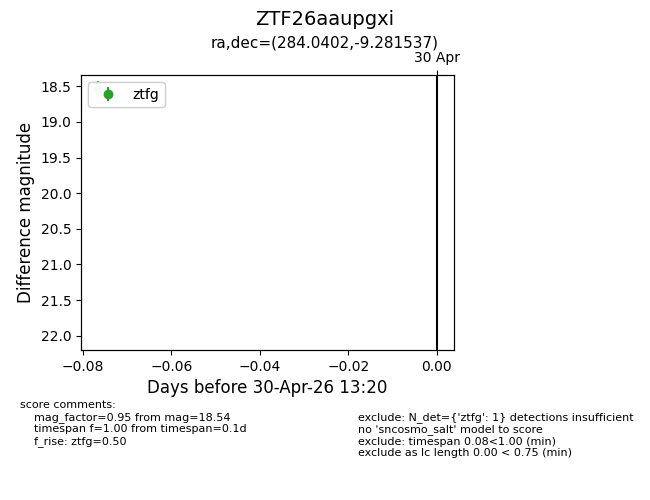
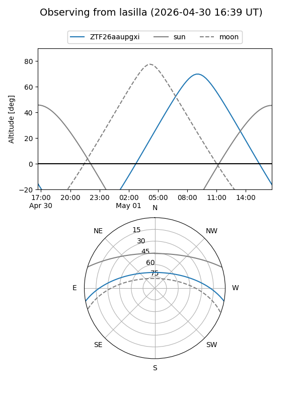
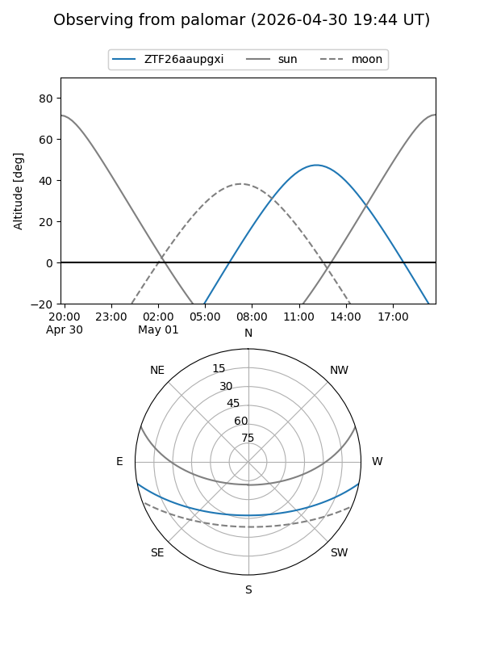

ZTF26aaupgxi
Target ZTF26aaupgxi at 2026-04-30 13:25
Aliases and brokers:
FINK: link
Lasair: link
ALeRCE: link
alt names
ZTF26aaupgxi (ztf,fink_ztf)
Coordinates:
equatorial (ra, dec) = 284.0402,-9.28154
equatorial (HMS+DMS) = 18:56:09.65,-09:16:53.53
galactic (l, b) = (25.1827,-5.25812)
Flags:
Photometry:
last ztfg=18.54
1 ztfg detections
Lightcurve

Visibility


Additional plots